|
|
|
|
Da' Cone |
|
|
 |
Major Appearances:
Planet Jackers -- Future Dib
Quote: "Preeeeetty..."
Affiliation:
Neighborhood
See also: Revolti |
|
Da' Cone is a teenager who
carries around a pink ice cream cone and has ice cream smeared on
his mouth. He stargazed with Revolti and later yelled at Prof.
Membrane, wanting his free power. |
|
Dancing Weenies |
|
|
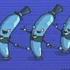 |
Major Appearances:
GIR Goes Crazy and Stuff
Quote: "Dance with
us, GIR! Dance with us into oblivion!"
Affiliation: GIR's
horrible mind
See also: |
|
While on a mission to
implant cows with dooky, GIR begins imagining some nicely dressed
dancing hot dogs that ask GIR to dance with them. |
|
Darlene O'BooBoo |
|
|
 |
Major Appearances:
Mortos Der Soulstealer
Quote: "Hiii!"
Affiliation:
Neighborhood
See also: Mortos |
|
Darlene O'BooBoo works at
the carnival, where Mortos Der Soulstealer hits on her. |
|
Death Bee |
|
|
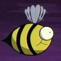 |
Major Appearances:
Attack of the Saucer Morons
Cameos: Walk
for your Lives
Quote: none
Affiliation:
See also: Robot Bee |
|
This bee caused Zim's Voot
Cruiser to crash and later caused the Voot Carrier pig to crash.
Because of this, Zim plans on hunting down the bees after he has
finished off the humans. The death bee was later seen landing on a
flower in Walk for your Lives. |
|
Deelishus Weenie
Employee |
|
|
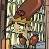 |
Major Appearances:
Tak: the Hideous New Girl
Quote: "Uhh, we have
chili beans!"
Affiliation:
Deelishus Weenie
See also: President
of the Deelishus Weenie Corporation, Tak |
|
An employee works in the
Deelishus Weenie stand in order to make it look like just another
food stand and not the tool of destruction it really is. He is
oblivious to the whole thing. |
|
Deelishus Weenie
President |
|
|
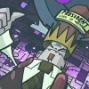 |
Major Appearances:
Tak: the Hideous New Girl
Quote: none
Affiliation:
Deelishus Weenie
See also: Deelishus
Weenie Employee, Tak |
|
Tak captured him in order
to gain an identity that she could use to help her in converting
Earth into a snack planet. She keeps him in a containment jar and
only lets him out when he is needed to perform speeches or public
service and the such. |
|
Delousing Assistants |
|
|
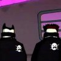 |
Major Appearances:
Lice
Quote: "Using...
mind tricks!"
Affiliation:
Skool
See also: Countess
Von Verminstrasser |
|
The delousing assistants
help the Countess in her battle against head lice. It was one of the
Countess' assistants who discovered that Zim's skin killed lice. |
|
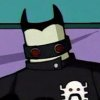
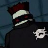 |
|
Desmond Flapp |
|
|
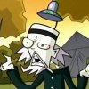 |
Major Appearances:
Attack of the Saucer Morons
Quote: "The pig form
perhaps represents mankind's... pig-like affinity... for
exploration."
Affiliation:
Children of the Bright and Shinning Saucer
See also: Trudy,
Boll, Yoa |
|
Desmond is an ugly bearded
man who leads the saucer morons and is the one who sees Zim out of
disguise first. |
|
Dib |
|
|
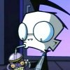 |
Major Appearances:
Quote: "See Gaz, to
defeat my enemy I must study my enemy, then become my enemy, then
move in with my enemy, then wear my enemies clothes, then..."
Affiliation:
Skool- Ms Bitters' Class, Membrane Labs, Swollen Eyeball Net
See also: Professor
Membrane, Gaz |
|
Dib is the only Skool child
who realizes that Zim is an alien, and he is obsessed with proving
it to everyone. He wears a black coat, has glasses, and a shirt with
a little face on it. He was on the roof when he intercepted the
transmission from Conventia. He is always trying to prove Zim is an
alien by exploiting his weaknesses, like pointing out that he's
green and has no ears, or asking why he's surprised to see rain. He
and Zim are head to head, and neither will stop until one of them
succeeds. He is also a member of the "Swollen Eyeball" conspiracy
theory group, where he is known as Agent Mothman. Prior to his
discovery of Zim, Dib was already heavily involved in the
paranormal. He is unpopular at Skool and has no friends. |
|
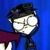
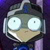
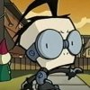
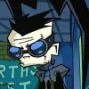
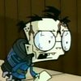
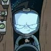 |
|
Dib's Girlfriends |
|
|
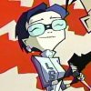 |
Major Appearances:
Dib's Wonderful Life of Doom
Quote: none
Affiliation:
Holographic Creations
See also: Dib |
|
In Zim's holographic
simulation of Dib's life created to find out if he threw the muffin,
Dib goes through different girlfriends in nearly every scene. |
|
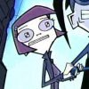
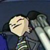 |
|
Dibship |
|
|
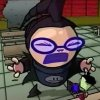 |
Major Appearances:
Dibship Rising
Quote: "I spotted
your fake Dib-double, Zim! You already tried that once before and it
won't work this time either!"
Affiliation: Dib
See also: Dib |
|
Formerly Tak's ship, Dib
implanted his own personality into the spittle runner after it
crashed in his yard. Unfortunately, the ship gained too much of
Dib's personality into the ship and it thought it was the real Dib.
Zim found out about Dibship and decided to use it against Dib by
taking control of its Irken power core. After a struggle between Dib
and Zim, Dibship sides with Dib but decides it can't bear having
Dib's personality and erases itself. |
|
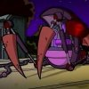
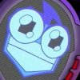 |
|
Dirge |
|
|
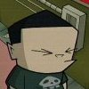 |
Major Appearances:
Bestest Friend
Quote: "I was born
with webbed fish toes... like some sort of horrible fish boy. Wanna
see?"
Affiliation: Skool
See also: Keef,
Mathew P. Mathers III, Melvin, Gretchen |
|
Dirge is one of the kids at
the 'rejects' table in the cafeteria. He just wants to show people
his deformity, but everybody gets creeped out when he offers to show
it to them. He is sometimes known as Pooka in the storyboards. |
|
Donutte |
|
|
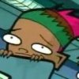 |
Major Appearances:
Gaz, Taster of Pork
Quote: none
Affiliation:
Skool- Mr Elliot's class
See also: |
|
See
Mr. Elliots'
seating chart. |
|
Dramatic Reenactment
Actors |
|
|
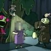 |
Major Appearances:
Mysterious Mysteries
Quote: "Hey new kid,
give me your lunch moneys!"
Affiliation:
Mysterious Mysteries
See also: Mysterious
Mysteries Host |
|
For several dramatic
reenactments in the Zim recording episode of Mysterious Mysteries,
actors portraying Dib, Gaz, Zim, and GIR were used. There were also
actors playing bushes. GIR added several more additions to the cast
for his version of the story, including Stacy (the chubby lady in
the bushes that he posed as on the show), a giant squirrel, and bad
guys on the squirrel's home planet. |
|
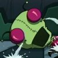
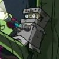
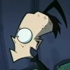
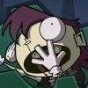
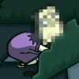
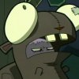
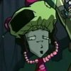
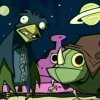 |